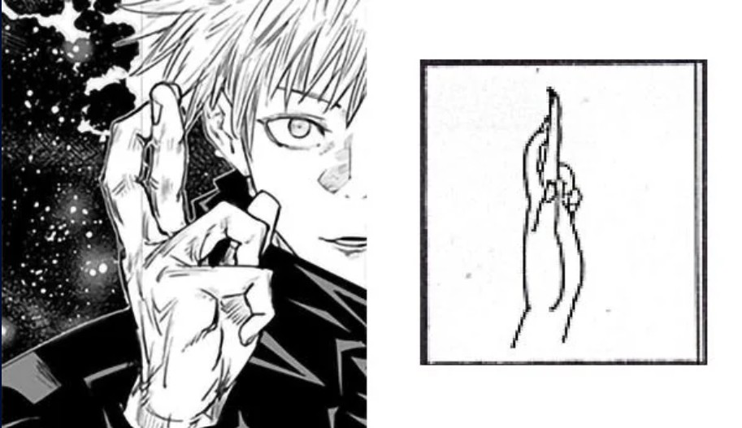
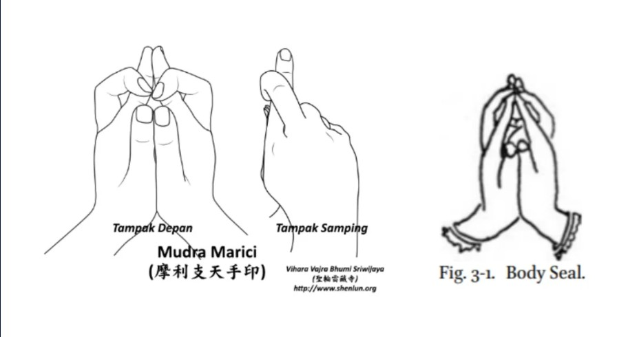
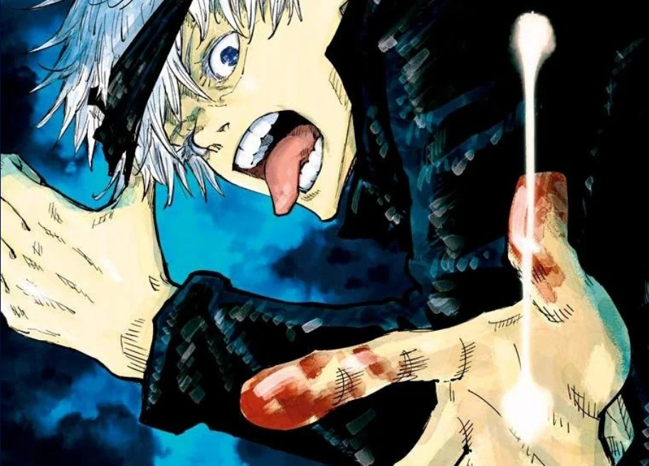

Jakiś czas temu natknałem się w internecie na film pt. "Dissecting Ryomen Sukuna" który to przedstawiał Sukune pod względem mitologii i powiązań z religią Buddyjską. Natchnięty duchem inspiracji, postarałem się zrobić coś podobnego ale dla najsilniejszego czarownika jakim jest Satoru Gojo. Przy okazji chciałbym przpomnieć, że nie posiadam żadnego wykształcenia z dziedziny filologi japońskiej, matematyki, ani fizyki dlatego należy brać ten tekst z przymrużeniem oka
Gojo jest często kojarzony z Taishakuten/Indrą ze względu na swój znak dłoni. Jednak mudra przypisana Taishakuten różni się nieznacznie od znaku dłoni Gojo, co może być powodem, dla którego wiele osób to przeoczyło.
- Ta mudra używa lewej ręki, podczas gdy Gojo używa prawej.
- Palec wskazujący zahacza o palec środkowy — u Gojo pozycja tych palców jest zamieniona.

Fakt, że drobna zmiana ułożenia palców całkowicie zmienia mudrę i powiązaną z nią istotę (jak u Megumiego), sprawił, że zacząłem przyglądać się temu głębiej. Zwłaszcza że istnieje sporo dezinformacji na temat rzekomej walki Indry z Yamą — która w rzeczywistości nigdy nie miała miejsca.
Znak dłoni przy Domain Expansion Gojo to w rzeczywistości mudra Marici. A dokładniej — dotychczas była to niekompletna pieczęć.

Marici (摩利支天: Marishiten) to buddyjska bogini będąca personifikacją światła(nie zgadniesz na czym opiera się technika Bezkresu jaką operuje Gojo), symbolizująca oślepiające promienie światła poprzedzające wschód słońca (a w niektórych tekstach także księżyca). Nazywana jest boginią Świtu. Świt i światło z nią związane symbolizują blask duchowego oświecenia i przebudzenia.
Marici, utożsamiana z Doumu, bywa określana jako królowa Niebios (天后), co stanowi ciekawy kontrast wobec Enmaten, który czczony jest jako król Piekieł. - jedna z osób na której jest wzorowany Sukuna.
Nazywana jest również bodhisattwą, który ślubował doprowadzić wszystkie czujące istoty do przebudzenia. Reprezentuje przebudzenie, triumf nad złem i zwycięstwo w obliczu ekstremalnych trudności.
Marici (dosł. „miraż”) posiada również moc iluzji. Co ciekawe, jedną z jej największych nadprzyrodzonych zdolności jest niewidzialność. W dawnych czasach wojownicy czcili Marici (szczególnie w japońskim buddyzmie jako boginię wojny) o świcie, by przywołać jej odwagę i moce niewidzialności. Mówi się, że chroni przed furią wojny, co często prowadzi do jej skojarzeń z Durgą — wojowniczą inkarnacją Parwati z mitologii hinduskiej. Według Marici Sutra, Marici zawsze pędzi przed słońcem z ogromną prędkością, pozostając niewykrywalną i niemożliwą do pochwycenia czy związania.
Co ważne, Mudry nie odpowiadają bezpośrednio mocom czarowników/klątw, lecz stanowią symbolikę. Inkantacje Gojo, motyw oświecenia wokół jego imienia, jego Six Eyes — wszystko to może nawiązywać do jego powiązania z Marici — a w szerszym ujęciu z Buddą.
Inkantacje w Jujutsu Kaisen to słowa lub frazy wypowiadane przez czarowników w celu wzmocnienia techniki. Pełnią funkcję „kotwicy” dla energii klątwy — precyzują jej działanie, zwiększają stabilność lub moc. W wielu przypadkach nie są tylko mechanicznym dodatkiem, ale też nośnikiem symboliki i znaczenia.
- Phase/Fazowość (位相): jedna z najważniejszych właściwości światła
- Twilight/Zmierch (黄昏): miękkie światło na niebie, gdy słońce znajduje się poniżej horyzontu — od świtu do wschodu słońca lub, częściej, od zachodu do zapadnięcia nocy
- Eyes of Wisdom/Oczy Mądrości (智慧の瞳): Prajna, czyli mądrość w buddyzmie — zdolność rozróżniania rzeczy. Istnieje także pojęcie 智慧光 (chiekou), jednego z dwunastu świateł Amitabhy, które niszczy ciemność ignorancji istot żywych
- Phase/Fazowość (位相): Patrz wyżej
- Haramitsu/Paramita/Oświecenie (波羅蜜): odnosi się do praktyk bodhisattwów prowadzących do oświecenia
- Pillar of light/Słup Światła (光の柱): prawdopodobnie odniesienie do zjawiska „słupa słonecznego”, powstającego, gdy promienie słońca odbijają się od drobnych kryształków lodu w atmosferze, tworząc pionową kolumnę światła(chociaż to jest lekko naciągane)
- Nine Ropes/Dziewięć Splotów (九綱): odniesienie do Kyushu zapisywanego po chińsku — regionu, z którego rzekomo wywodzi się japoński buddyzm
- Polarized light (偏光): kolejna ważna właściwość światła wynikająca z jego natury fazowej. Ma też drugie znaczenie. Kanji Red/Czerwieni (赫) oznacza „rozświetlać; jaśnieć”. Kyushu znane jest z zielonkawo-niebieskich traw, podobnych do kanji Blue (蒼). Można więc wnioskować, że 九綱 + 偏光 to odniesienie do Blue (蒼) i Red (赫) oraz połączenia tych dwóch technik
- Crows & Shomyou/Kruk i Hymn Buddyjski (烏と声明): Jedyne powiązanie jakie mogłem, na ten moment, wymyśleć to to, że japońskie kruki są najmądrzejsze
- Gap between within & without/Styk wieszchu i spodu (表裏の間): Tutaj, jedyne na co wpadłem to powiazanie z tego jak działają poprzednie techniki. Błękit jako zbieżnosć oraz Czerwień jako rozbieżność po których połączeniu powinno wyjść 0, tworzą jednak coś innego. I to jest właśnie to miejsce(chociaż to również jest naciągane)
Satoru (悟) oznacza „zrozumieć / osiągnąć oświecenie”. Gojo (五条) można interpretować na różne sposoby, ponieważ liczba pięć (五) ma w buddyzmie wiele znaczeń.
Marici jest emanacją Vairocany (大日如来: Dainichi Nyorai) — najwyższego Buddy. Vairocana jest centralnym bóstwem wśród Pięciu Dhyani Buddów (Five Wisdom Buddhas) w buddyzmie ezoterycznym.
Dainichi (大日) oznacza „Wielkie Słońce”, istotę, której światło oświeca wszystkie byty niczym życiodajne promienie słońca. Nyorai („tak przybyły”) to epitet oświeconych Buddów zajmujących najwyższą pozycję w japońskim panteonie.
W buddyzmie Shingon reprezentowany jest przez sanskrycką literę „A”, symbolizującą życie i śmierć; pojawienie się i powrót.
Teraz, to może zabrzmieć jak coś naciąganego, ale:
- Elementem przypisanym Vairocanie jest Przestrzeń/Pustka. Technika Gojo — Bezkres — pozwala mu manipulować przestrzenią. Jego Rozszerzenie Domeny nosi nazwę Niezmierzona Pustka.
- Zmysłem Vairocany jest Wzrok. Szóste Oczy Gojo dają mu nadzmysłową percepcję a także boski poziom kontroli przeklętej energii daleko przewyższający innych czarowników.
Six Eyes można również powiązać z sześcioma elementami buddyzmu ezoterycznego.
W buddyzmie ezoterycznym pięć elementów (Gogyo 五行) — Ziemia, Woda, Ogień, Powietrze/Wiatr, Przestrzeń/Pustka — łączy się z dodatkowym, szóstym elementem: UMYSŁEM (duchową świadomością/percepcją). Dopiero dodanie szóstego elementu sprawia, że pięć pozostałych staje się „żywe”. Bez tego zwykłe oczy widzą jedynie zróżnicowane formy i pozory.
Vairocana często przedstawiany jest z mudrą symbolizującą jedność pięciu elementów świata z szóstym elementem — duchową świadomością. Mówi się, że posiada sześć elementów.
- Co istotne, Vairocana uważany jest za sumę wszystkich Dhyani Buddów i łączy w sobie ich cechy. Dlatego przedstawiany jest w czystej bieli — jako że biel jest połączeniem wszystkich kolorów. Gojo również silnie kojarzony jest z bielą — jego włosy, brwi, rzęsy.
Okładka tomu 4 przedstawia także białą technikę, która nie przypomina żadnej z dotychczas użytych przez Gojo.

Czy to tylko zbieg okoliczności, czy celowy zabieg?
Na marginesie — oto kolory przypisane pozostałym Dhyani Buddom:
- Akshobhya (Ashuku Nyorai) — Niebieski
- Amitabha (Amida Nyorai) — Czerwony
- Ratnasambhava (Hōshō Nyorai) — Żółty
- Amoghasiddhi (Fukūjōju Nyorai) — Zielony (Co ciekawe, w fandomie pojawiło się sporo nieświadomych żartów właśnie z takim kolorem)
Jeszcze będzie updatowane